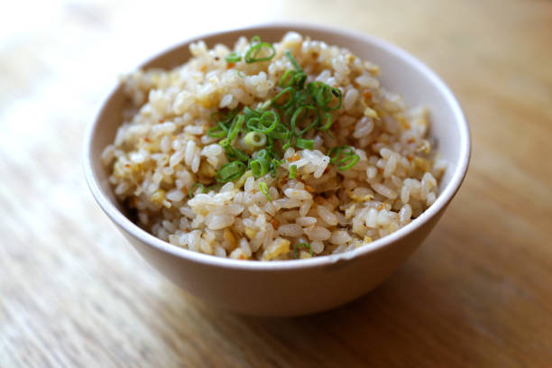

Simple tasty garlic fried rice

Commonly known to filipinos as "Sinangag", not to be confused with the sour soup "Sinigang", is a simple fried rice recipe that usually involves day old rice and lots of garlic
Usually cooked and consumed for breakfast, Sinangag is a staple in filipino households. It's savoury, rich, and salty flavor profile go well with most filipino breakfast dishes. Such dishes are Tocino and Longaniza
The dish is simple yet tasty. Its flavor mainly comes from the golden brown garlic pieces and the garlic oil from sauteing the garlic itsef. You add that with a little bit of msg and salt, or simply "Magic Sarap", then you'll have the heaviest, yet most scrumptious breakfast to start the long day
Ingredients
- as much garlic as you want and can safetly consume but generally one whole head of garlic minced
- 3-4 cups of day old rice(preferrably cold to make it dry)
- 2-3 tablespoons of a neutral oil(vegetable oil) or meat fat
- salt and msg to taste, but if you're scared, use Magic Sarap
- green onions for garnish(optional)
How to actually make it?
- Grab a pan, preferrably a wok, but a nonstick pan will work fine, and heat it up to when you put your hand above the pan it's hot
- Then you pour in your choice of oil, and swirl it around so it covers the bottom of the pan
- Turn off the gas or lower the heat and dump the minced garlic into the hot pan DON'T LET IT BURN
- When it is light brown and soft, take the garlic pieces out SET ASIDE but keep the oil inside the pan
- Break up the clumps of day old rice(if it's clumpy) then on high heat, carefully pour in the rice inside the hot pan (you may need to wait until the pan gets to a hotter temperature again)
- Saute the rice and keep it moving every now and then, you should see Wok Hay if not, then that's fine, just keep sauteing it
- When you've judged that the rice is now dry and a little bit crispy, this is where you add back the garlic that we set aside
- Season it with salt and msg or a teaspoon of Magic Sarap then saute a lil bit more
- garnish with green onions and BASK IN THE DELICIOUSNESS OF THE FRIED RICE